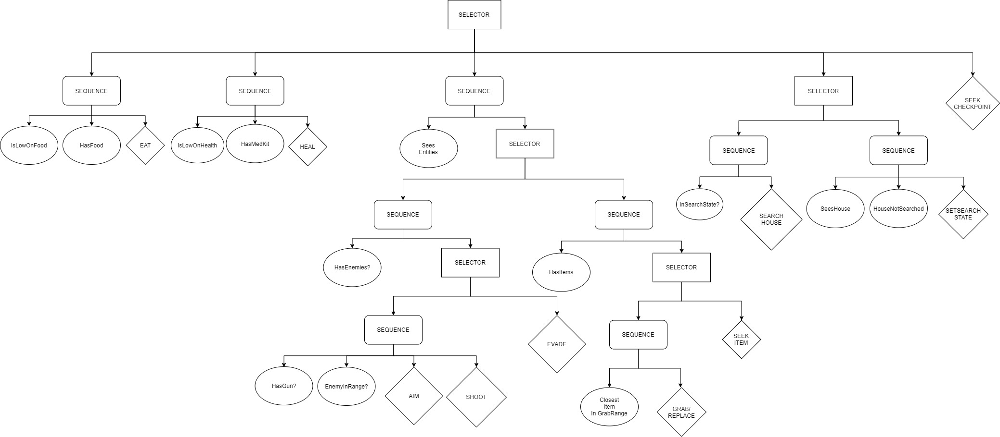

BEHAVIOUR TREES
My first encounter with AI was - I'm not gonna lie - pretty difficult for me. We got a framework in which a little Agent had to survive for as long as he can. But as you can imagine.. The Agent didn't do anything at all by itself. The first thing we had to come up with was a diagram that illustrates the Agent's way of thinking. Using a behaviour tree structure, I came up with a pretty simple implementation containing some selectors and sequences.

Creating the tree was only the beginning. The implementation was not that easy at all. Not only did the tree need to communicate with the agent from any
place possible, it had to do that every frame. Luckily, a not so efficient but rather fast solution was the use of blackboards. We learned about them in class
and I was blown away. A container that could store any data that you want, easily retrievable by string keys.
The moment you see your agent moving around and making decisions by itself was amazing to me. That is why I also chose my graduation work to be about self-learning
agents. I must and I will dive deeper into artificial intelligence when I get the chance.